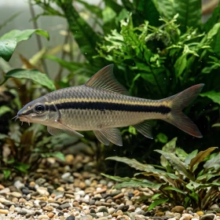

Nome popular principal
Flying Fox
Flying Fox, Comedor de Algas Flying Fox
Ficha de peixe
Labeos e Comedores de Algas
Um habitante ativo e atraente para o fundo do aquário, ideal para sistemas bem montados com rochas e troncos.

Nome popular principal
Flying Fox, Comedor de Algas Flying Fox
Nome científico
Nome técnico essencial para taxonomia, cruzamento de manejo e referência editorial consistente.
Dificuldade de manejo
Use este nível como referência inicial, sempre considerando volume, estabilidade e compatibilidade do aquário.
Seção 1
Seção 2
Seções 4 a 6
Flying Fox tem hábito alimentar onívoro. Excelente. 1 a 2 vezes ao dia. Embora consuma algas e biofilme quando jovem, necessita de uma dieta variada com rações para peixes de fundo, vegetais e spirulina.
Difícil visualmente; fêmeas adultas costumam apresentar o abdômen ligeiramente mais volumoso. Tipo de reprodução: Ovíparo. Dificuldade de reprodução: Avançado. A reprodução em aquários domésticos é extremamente rara, ocorrendo quase exclusivamente em cativeiro comercial via indução hormonal.
Alta. Substrato recomendado: Areia fina ou cascalho rolado sem arestas cortantes. Necessidade de esconderijos: Alta. Aprecia aquários com plantas densas, troncos e pedras achatadas que permitam a fixação de algas e ofereçam abrigos seguros.
Seção 7
Atinge até 15 cm e pode ultrapassar os 8 anos de vida quando mantido em água limpa e bem oxigenada.
Seção 8
Sim, principalmente quando jovem. Na fase adulta, ele passa a preferir rações prontas e se torna menos dedicado à raspagem de algas.
O Flying Fox possui nadadeiras com tons alaranjados e bordas pretas bem marcadas, além de uma linha preta lateral com contorno dourado definido.
Não é recomendado em aquários pequenos ou médios, pois eles perseguem violentamente outros membros da mesma espécie por território.